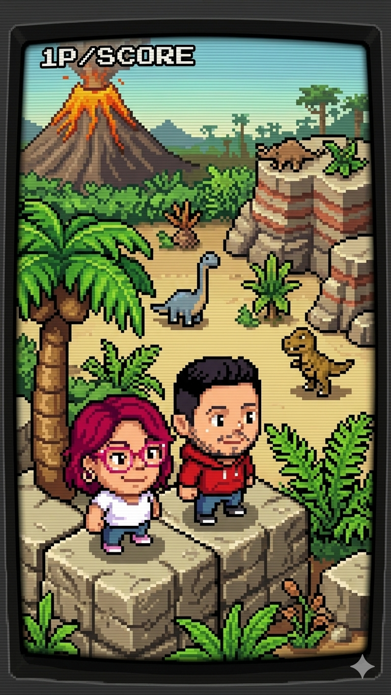

"Dos mentes, un solo código"
No somos los típicos científicos de saco y corbata encerrados en un laboratorio con olor a naftalina. Somos dos amigos que un día, entre una línea de código y un solo de Chester Bennington, se dieron cuenta de algo: la paleontología en Argentina es épica, pero su comunicación está estancada en la edad de piedra.
Titanes del Sur nació en esa intersección donde el trekking por la estepa se cruza con el arte digital y la tecnología. ¿Qué nos mueve? Nuestro "Stack" de pasiones.
Perooo esto no se trata solo de hacer renders facheros de dinosaurios. Hay una realidad que quema: Argentina es una de las mayores canteras paleontológicas del planeta, y muchos de sus yacimientos están en peligro. El vandalismo, el turismo sin control, el saqueo de piezas y el simple paso del tiempo amenazan con borrar páginas enteras de la historia de la Tierra antes de que podamos leerlas. Ahí es donde pisamos fuerte. Creemos que la mejor forma de preservar un yacimiento no es alambrarlo y esconderlo, sino hacer que la comunidad lo entienda, lo valore y se apropie de él. Usamos la tecnología para digitalizar y mapear el patrimonio, creando registros indestructibles que traspasen generaciones. Queremos democratizar el acceso a la ciencia para que cada persona que camine por la Patagonia sepa que está pisando suelo sagrado del Mesozoico y se convierta en un guardián de ese lugar.
Nuestro Stack de Pasiones
Código & Tecnología
Convencidos de que un fósil de 70 millones de años se entiende mejor con Realidad Virtual o un modelo 3D bien pulido. Queremos hackear el aburrimiento académico.
Arte Digital & Diseño
Nos pasamos horas en editores de imagen. Para nosotros, reconstruir un dinosaurio es la forma definitiva de arte.
Espíritu de Exploración
Nos encanta el trekking. No hay nada como caminar por la naturaleza con auriculares puestos y sentir la escala real de estos titanes.
Nuestra Filosofía
"In the End, it matters"
Se puede ser un nerd de la tecnología y, al mismo tiempo, ser el guardián más feroz de la historia de nuestro suelo.
¿Te sumás a nuestra causa?